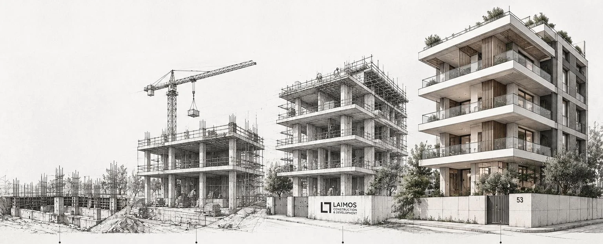
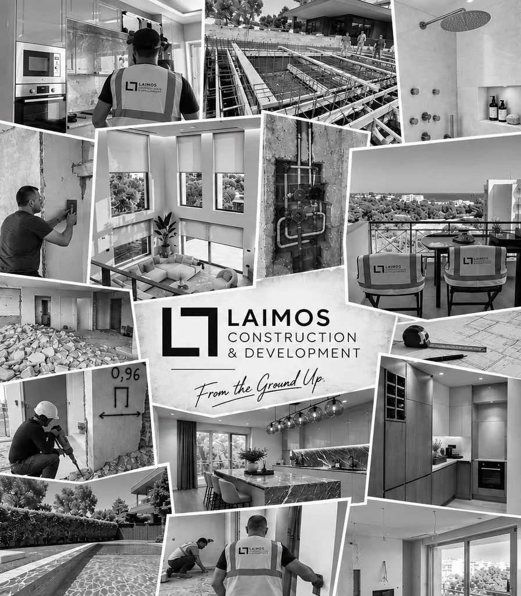

From the ground up.
Vision · Planning · Construction · DeliveryΌραμα · Σχεδιασμός · Κατασκευή · Παράδοση

- FoundationsΘεμελίωση
- StructureΣκελετός
- Shell completedΚέλυφος
- CompletedΟλοκλήρωση
Who we areΠοιοι είμαστε
People. Experience. Results.Άνθρωποι. Εμπειρία. Αποτέλεσμα.
We are a dedicated team delivering high-end construction, renovation and development projects, with a focus on precision, quality and attention to detail. From the first client meeting and the first budget, through every decision on site, to final delivery, we manage every stage of the process, coordinating construction, technical decisions, specialist trades and bespoke fabrication to one consistent standard.
Είμαστε μια ομάδα αφοσιωμένη σε έργα κατασκευής, ανακαίνισης και ανάπτυξης ακινήτων υψηλών προδιαγραφών, με έμφαση στην ακρίβεια, την ποιότητα και τη λεπτομέρεια. Από την πρώτη συνάντηση μαζί σας και τον πρώτο προϋπολογισμό, σε κάθε απόφαση στο εργοτάξιο και έως την τελική παράδοση, αναλαμβάνουμε και συντονίζουμε κάθε στάδιο του έργου: τις οικοδομικές εργασίες, τις τεχνικές αποφάσεις, τα εξειδικευμένα συνεργεία και τις ειδικές κατασκευές, με ενιαία πρότυπα ποιότητας.
Established in 2022 and backed by more than a decade of industry experience, our team has taken on a wide range of projects across Athens: new residential buildings, complete renovations of homes and offices, and residential developments of our own. Much of our growth has come through client referrals and word of mouth, a reflection of the trust we build through our work. Our clients’ feedback and references are available on request.
Η εταιρεία ιδρύθηκε το 2022 και στηρίζεται σε περισσότερα από δέκα χρόνια εμπειρίας στον κλάδο. Τα τελευταία χρόνια έχουμε αναλάβει ένα ευρύ φάσμα έργων σε όλη την Αθήνα: νέες πολυκατοικίες, ολικές ανακαινίσεις κατοικιών και επαγγελματικών χώρων, καθώς και δικές μας οικιστικές αναπτύξεις. Μεγάλο μέρος της ανάπτυξής μας οφείλεται σε πελάτες που μας πρότειναν σε άλλους, κάτι που αντικατοπτρίζει την εμπιστοσύνη που χτίζουμε με τη δουλειά μας. Οι απόψεις και οι συστάσεις των πελατών μας είναι διαθέσιμες κατόπιν αιτήματος.

What we doΤι κάνουμε
One team · One standardΜία ομάδα · Ένα πρότυπο
-
01
New builds & developmentΝέες κατασκευές & ανάπτυξη ακινήτων
From permit to keys.Από την άδεια έως τα κλειδιά.
We build new residential buildings for clients and develop our own, alone or in joint ventures with landowners and partner companies, including land-for-flats (antiparochi) agreements. Every project starts with a study of what the plot allows and what it will cost. From there we manage the whole project ourselves: permits, the design team and every trade on site, through to handover and sale.
Κατασκευάζουμε νέα κτίρια κατοικιών για πελάτες και αναπτύσσουμε δικά μας έργα, μόνοι μας ή σε συνεργασία με ιδιοκτήτες οικοπέδων και συνεργαζόμενες εταιρείες, καθώς και με το σύστημα της αντιπαροχής. Κάθε έργο ξεκινά με μελέτη του τι επιτρέπει το οικόπεδο και πόσο θα κοστίσει. Από εκεί και πέρα διαχειριζόμαστε οι ίδιοι ολόκληρο το έργο: τις άδειες, την ομάδα μελετητών και κάθε συνεργείο στο εργοτάξιο, έως την παράδοση και την πώληση.
- Plot assessment and feasibility studyΑξιολόγηση οικοπέδου και μελέτη σκοπιμότητας
- Planning rules, layouts and change of useΌροι δόμησης, διαρρυθμίσεις και αλλαγή χρήσης
- Construction cost and timelineΚόστος κατασκευής και χρονοδιάγραμμα
- Joint ventures and land-for-flats (antiparochi) agreementsΚοινοπραξίες και συμβάσεις αντιπαροχής
- Project and construction management, from foundations to handoverΔιαχείριση έργου και κατασκευής, από τα θεμέλια έως την παράδοση
- Coordination of architects, engineers and every tradeΣυντονισμός αρχιτεκτόνων, μηχανικών και όλων των συνεργείων
- Financing structure and salesΧρηματοδοτικό σχήμα και πωλήσεις
-
02
RenovationsΑνακαινίσεις
Existing homes, rethought.Υπάρχοντα σπίτια, με νέα ματιά.
Complete renovations of houses and apartments, run as one project by one team. From the first meeting and the first budget to handover, we coordinate every trade on site. You deal with one company, one budget and one schedule.
Ολικές ανακαινίσεις κατοικιών και διαμερισμάτων, ως ένα έργο από μία ομάδα. Από την πρώτη συνάντηση και τον πρώτο προϋπολογισμό έως την παράδοση, συντονίζουμε κάθε συνεργείο στο εργοτάξιο. Συνεργάζεστε με μία εταιρεία, με έναν προϋπολογισμό και ένα χρονοδιάγραμμα.
- Demolition, removals and layout changesΚαθαιρέσεις, αποξηλώσεις και αλλαγές διαρρύθμισης
- Drywall partitions and suspended ceilingsΧωρίσματα γυψοσανίδας και ψευδοροφές
- Plumbing, drainage and electrical installationsΥδραυλικές, αποχετευτικές και ηλεκτρολογικές εγκαταστάσεις
- Heating, cooling and underfloor heatingΘέρμανση, ψύξη και ενδοδαπέδια θέρμανση
- Thermal insulation and waterproofingΘερμομόνωση και στεγάνωση
- Aluminium frames and glazingΚουφώματα αλουμινίου και υαλοπίνακες
- Flooring: tiles, marble and timberΔάπεδα: πλακάκια, μάρμαρο και ξύλο
- Plastering and paintingΣοβατίσματα και βαφές
- Bathrooms and kitchensΛουτρά και κουζίνες
- Custom joinery, interior doors and storageΕιδικές ξυλουργικές κατασκευές, εσωτερικές πόρτες και αποθηκευτικοί χώροι
- Pools and landscapingΠισίνες και διαμόρφωση κήπων
-
03
Offices & commercialΓραφεία & επαγγελματικοί χώροι
Built around how you work.Σχεδιασμένα για τον τρόπο που δουλεύετε.
Complete fit-out and refurbishment of offices and commercial floors, to current standards for acoustics, ventilation, lighting and fire safety. Planned around how the business runs, and phased around your move-out and return date, so your team moves back in on time.
Πλήρης διαμόρφωση και ανακαίνιση γραφείων και επαγγελματικών ορόφων, με τα σύγχρονα πρότυπα ακουστικής, αερισμού, φωτισμού και πυρασφάλειας. Προγραμματίζουμε τις εργασίες με βάση τη λειτουργία της επιχείρησης και τις οργανώνουμε σε φάσεις, με βάση τις ημερομηνίες αποχώρησης και επιστροφής σας, ώστε η ομάδα σας να επιστρέψει στην ώρα της.
- Strip-out and new layoutsΑποξηλώσεις και νέες διαρρυθμίσεις
- Glass and acoustic drywall partitionsΓυάλινα και ηχομονωτικά χωρίσματα γυψοσανίδας
- Suspended and acoustic ceilingsΨευδοροφές και ακουστικές οροφές
- Acoustic treatment for open-plan areas and meeting roomsΑκουστική επεξεργασία ενιαίων χώρων και αιθουσών συσκέψεων
- HVAC and fresh-air ventilationΚλιματισμός και αερισμός με νωπό αέρα
- Power, lighting and lighting controlsΗλεκτρολογικά, φωτισμός και αυτοματισμοί φωτισμού
- Structured data cabling and AVΔομημένη καλωδίωση και οπτικοακουστικά
- Fire detection, fire safety and access controlΠυρανίχνευση, πυρασφάλεια και έλεγχος πρόσβασης
- Raised access floors and floor finishesΥπερυψωμένα δάπεδα και τελικές επιστρώσεις
- Reception, kitchenettes and washroomsΥποδοχή, κουζίνες προσωπικού και χώροι υγιεινής
- Custom joinery and finishesΕιδικές ξυλουργικές κατασκευές και τελειώματα
- Phased programme with an agreed handover dateΕργασίες σε φάσεις με συμφωνημένη ημερομηνία παράδοσης
-
04
Feasibility studies & project managementΜελέτες σκοπιμότητας & διαχείριση έργου
Also available as a separate service.Διαθέσιμες και ως ξεχωριστή υπηρεσία.
Both come as standard on every project we build. We also offer them separately to owners and investors. Before you buy or commit, we study what a property can become: planning rules, layouts, change of use, cost and timeline. If you build with your own designers and contractors, we manage the project on your behalf.
Και οι δύο υπηρεσίες περιλαμβάνονται σε κάθε έργο που κατασκευάζουμε. Τις προσφέρουμε και ξεχωριστά σε ιδιοκτήτες και επενδυτές. Πριν αγοράσετε ή δεσμευτείτε, μελετάμε τι μπορεί να γίνει ένα ακίνητο: όροι δόμησης, διαρρυθμίσεις, αλλαγή χρήσης, κόστος και χρονοδιάγραμμα. Αν χτίζετε με δικούς σας μελετητές και εργολάβους, διαχειριζόμαστε το έργο για λογαριασμό σας.
- Feasibility studies before you buy or investΜελέτες σκοπιμότητας πριν από αγορά ή επένδυση
- Bill of quantities and budgetΠρομέτρηση και προϋπολογισμός
- Contractor quotes, compared like for likeΣυγκριτική αξιολόγηση προσφορών εργολάβων
- Contracts and schedulingΣυμβάσεις και χρονοπρογραμματισμός
- Site coordinationΣυντονισμός εργοταξίου
- Payments tracked against the budgetΠαρακολούθηση πληρωμών βάσει προϋπολογισμού
Aesthetics and craftsmanshipΑισθητική και τεχνική αρτιότητα
Custom kitchens.Κουζίνες κατά παραγγελία.
Joinery / Stone / LightingΞυλουργική / Πέτρα / Φωτισμός
Spaces that feel effortless.Χώροι που λειτουργούν αβίαστα.
Interiors & exteriorsΕσωτερικοί & εξωτερικοί χώροι
Bathrooms, resolved as architecture.Λουτρά με αρχιτεκτονική σκέψη.
Stone / Metal / LightΠέτρα / Μέταλλο / Φως
Bespoke woodwork.Ειδικές ξυλουργικές κατασκευές.
Custom joineryΚατά παραγγελία
Indoor to outdoor.Από μέσα προς τα έξω.
Landscape / PoolsΚήποι / Πισίνες
Our portfolio with all of our projects is available upon request.Ο φάκελος με όλα τα έργα μας είναι διαθέσιμος κατόπιν αιτήματος. Get in touchΕπικοινωνήστε μαζί μας
Kyriakou Residences
New build / Under construction / MarousiΝέα κατασκευή / Υπό ανέγερση / Μαρούσι
A penthouse maisonette on the third floor and attic of a new building at Panagi Kyriakou 12, in the centre of Marousi.
Ρετιρέ μεζονέτα στον Γ΄ όροφο και τη σοφίτα νεόδμητης οικοδομής, στην οδό Παναγή Κυριακού 12, στο κέντρο του Αμαρουσίου.
- 101.76 m²101,76 τ.μ.
- main living areaκύριοι χώροι
- 3
- bedroomsυπνοδωμάτια
- 2
- bathroomsλουτρά
- ≈ 30 m²≈ 30 τ.μ.
- private roof terraceδώμα αποκλειστικής χρήσης
The homeΤο ακίνητο
Two levels joined by an internal stair. The third floor holds an open living and dining room with kitchen, one bedroom, a bathroom and a store room. The attic has two more bedrooms, a second bathroom and direct access to the roof terrace.
Δύο επίπεδα με εσωτερική σκάλα. Στον Γ΄ όροφο ο ενιαίος χώρος ημέρας με ανοιχτή κουζίνα, ένα υπνοδωμάτιο, λουτρό και εσωτερική αποθήκη. Στη σοφίτα δύο ακόμη υπνοδωμάτια, δεύτερο λουτρό και άμεση έξοδος στο δώμα.
Balconies on two sides (13.43 m²), semi-outdoor space (10.66 m²), a covered parking space on the pilotis and a basement store room are included.
Περιλαμβάνονται εξώστες σε δύο πλευρές (13,43 τ.μ.), ημιυπαίθριοι χώροι (10,66 τ.μ.), στεγασμένη θέση στάθμευσης στην πυλωτή και αποθήκη στο υπόγειο.
LocationΗ θέση
- 200 m from Marousi station on Line 1, a 3-minute walk
- 500 m from Syngrou Forest
- Next to the Marousi shopping streets, schools and services
- Quick access to Kifisias Avenue and Attiki Odos
- 200 μ. από τον σταθμό «Μαρούσι» της Γραμμής 1, 3 λεπτά με τα πόδια
- 500 μ. από το Δάσος Συγγρού
- Δίπλα στην αγορά του Αμαρουσίου, σε σχολεία και υπηρεσίες
- Άμεση πρόσβαση στη Λ. Κηφισίας και στην Αττική Οδό
SpecificationΠροδιαγραφές
- External thermal insulation on the whole envelope
- Thermally broken aluminium frames with energy glazing
- Underfloor heating with a heat pump
- Lift and step-free access
- Εξωτερική θερμοπρόσοψη σε όλο το κέλυφος
- Κουφώματα αλουμινίου με θερμοδιακοπή και ενεργειακούς υαλοπίνακες
- Ενδοδαπέδια θέρμανση με αντλία θερμότητας
- Ανελκυστήρας και πρόσβαση ΑμεΑ
Construction stageΣτάδιο κατασκευής
- Permit & foundationΆδεια & θεμελίωσηCompletedΟλοκληρωμένο
- Structural frameΦέρων οργανισμόςConcrete 80% completeΣκυροδετήσεις κατά 80%
- MasonryΤοιχοποιίεςNextΕπόμενο
- Services & finishesΗ/Μ & τελειώματαInstallations, insulation, framesΕγκαταστάσεις, θερμοπρόσοψη, κουφώματα
- HandoverΠαράδοσηIn 9 to 12 monthsΣε 9 έως 12 μήνες
Status as of September 2026.
Κατάσταση Σεπτεμβρίου 2026.